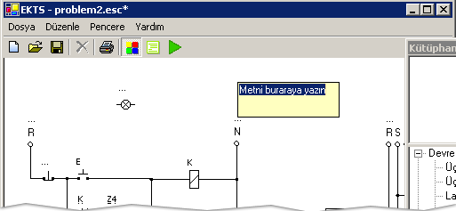
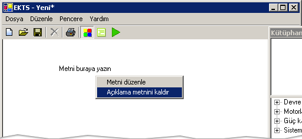

[prew] [next]
Açıklama metni
Açıklama Metni Oluşturmak
Açıklama metni oluşturmak için:
- Düzenle menüsünde bulunan Metin Ekle düğmesine tıklayınız. Çizim penceresinin sol üst köşesine metin etiketi eklenecektir.
- Eklenen metin etiketini farenin sol tuşuna basılı tutarak istediğiniz konuma taşıyınız.
Açıklama Metnini Düzenlemek
Açıklama metnini düzenlemek için:
- Açıklama metnine farenin sol tuşu ile çift tıklayın.
- Beliren metin kutusuna, Şekil 9'da gözüktüğü gibi, gözükmesini istediğiniz metni girin
- Metni girdikten sonra metin kutusunun dışına tıklayın
- Açılama metninin, sağ alt köşesine farenin sol tuşunu kullanarak boyutlandırın.

Şekil 9 Açıklama Metninde Gözüken Metin Kutusu.
Açıklama Metnini Silmek
Açıklama metnini silmek için:
- Silmek istediğiniz açıklama metnine farenin sağ tuşuyla tıklayınız
- Açılan menüden, Şekil 10'da gözüktüğü gibi, “Açılama metnini kaldır” seçeneğine tıklayınız.

Şekil 10 “Açıklama metnini kaldır” Seçeneği.